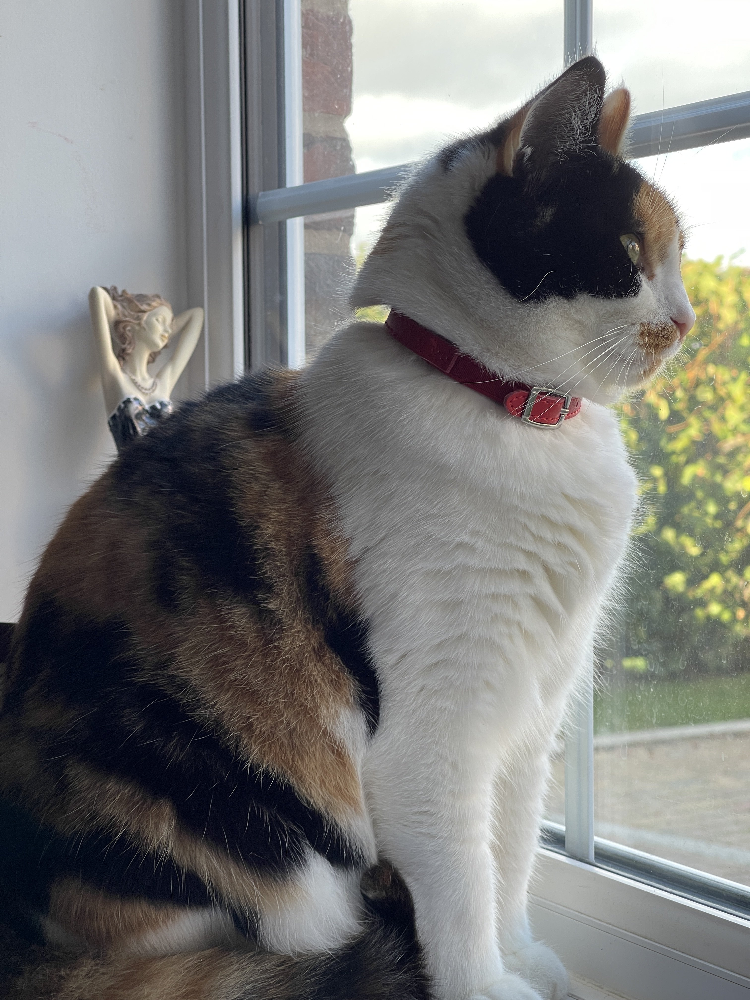

2. I like my new home. (我喜欢我的新家。)#

I’ve never been confined in a house for such a long time, and I’m starting to find it a bit unbearable.
The kind-hearted lady didn’t have much experience with cats, that’s what I heard her tell Mr. Bell. Mr. Bell brought a lot of cat food, so my meals were not a problem. He transported me in a cat carrier, and the kind-hearted lady had placed cat litter inside. She showed it to me, and I understood it was a convenient spot, but I really didn’t like doing my business in the room.
I would do my business once every morning, and the kind-hearted lady would take the cat carrier out to clean it and replace the litter. But it looked like hard work for her, and I thought if I were allowed to go outside, she wouldn’t have to do these things.
The kind-hearted lady was sometimes at home all day and sometimes went to the office. She always made sure I had food available at all times and gave me many treats. Whenever I looked a little sad, she would give me treats. Even though I had only been here for a few days, I felt like I had already gained some weight. During the day, I would often sunbathe by the glass door in the kitchen, which was very comfortable.
Apart from where I sleep, I have a few favorite spots, and they are all by the windows. The window sill in the upstairs bedroom is the best. In the morning, I can see the sunrise from the east-facing room, and in the evening, I can watch the sunset from the west-facing one. There’s also a window sill in the downstairs living room, where I can see the neighbors coming and going, and cars entering and leaving. The kind-hearted lady noticed that I liked sitting on the window sills, so she placed cushions on them, which felt very cozy.
I was gradually getting used to this place while sitting on the window sills. I saw several other cats! There was a white one, two tabby cats, and one just like me, a three-colored calico cat. The white cat was friendly to me and would often come to the garden to see me. He seemed curious about me, probably because he didn’t know why I stayed inside and didn’t go out. Sometimes, when I sunbathed by the glass door in the kitchen, he would watch me from the other side of the glass. This would usually happen when the kind-hearted lady wasn’t at home, and if she came back, she would open the kitchen window, and the white cat would disappear instantly. The two tabby cats weren’t very friendly; they would hiss at me when they saw me. It seemed like the kind-hearted lady didn’t like them either. The three-colored calico cat, just like me, belonged to the neighbor next door. The kind-hearted lady said she wasn’t as pretty as me, and I agreed with her assessment.
Next to the house was a large green area, which was actually someone’s garden. That garden was really huge, maybe about half the size of a football field. In one corner of the garden, there were several very tall trees, much taller than the trees near our house. The trees had many birds, and that was their home. Maybe because they lived in the tall trees of the wealthy family, they looked healthy, and a few times, I saw trash falling from the sky in the garden, which those birds probably had a hand in!
I longed to go out quickly; if I could, those birds wouldn’t be so bold!
After two weeks, the kind-hearted lady took me to the vet again, this time for vaccinations. I had never been vaccinated before, and the kind-hearted lady knew I didn’t like the vet. She explained my situation to the vet beforehand. When I entered the examination room, two assistants were already prepared. They both wore gloves, and one held me down while the other used a cloth to cover my head. The vaccine hurt a lot; I wanted to jump up, but they held me down tightly. Even though it was only for a few seconds, I could hardly stand it.
The kind-hearted lady and the vet had planned to implant a microchip during this visit because she was preparing to allow me to go outside. They wanted to vaccinate me to prevent illness and implant the microchip to ensure I wouldn’t get lost. However, after the vaccination, the vet decided not to implant the microchip. He held two syringes, one for the vaccine and the other for the microchip, which was several times thicker than the first one. He told the kind-hearted lady, “Let’s not subject this cat to any more pain. She can’t even tolerate this small needle; using the large one might be life-threatening for her.”
So, I didn’t get the microchip implanted, but I thought even without a microchip, I wouldn’t get lost, and I loved my new home. I wanted to tell the kind-hearted lady that.
我从来没有被关在一个房子里这么长时间，我有点儿忍受不住了。
好心人并没有什么养猫经验，我听她是这样和铃铛先生说的。铃铛先生带来很多猫粮，我的三餐不成问题。铃铛先生是用猫房把我运来的，好心人把猫房里放了猫砂，她指给我看，我明白那是方便的地方，不过我真的不喜欢在房间里做这样的事儿。
我每天凌晨的时候方便一次，好心人就拿着猫房出去清理，给我换上新的猫砂。不过，看上去她可真辛苦，我想如果允许我出去，她就不用做这些了。
好心人有时候全天在家，有时候全天去办公室。她总会保证我随时有吃的，她还给我好多零食，我一旦有点儿显出难过的样子，她就给我零食吃。虽然才来了没几天，我觉得自己已经长胖了，白天我经常在厨房玻璃门那里晒太阳，舒服极了。
除了睡觉的地方，我还有几个最喜欢的地方，都是窗台那里。二楼房间卧室的窗台最好了，早晨我可以在东面的房间看朝阳，傍晚我可以在西面的房间里看夕阳。还有楼下客厅里的窗台，我可以在那里看到邻居们来来往往，车辆进进出出。好心人看我喜欢在窗台上坐着，她在窗台上放了软垫儿，坐上去软软的，特别贴心。
我在窗台上慢慢熟悉了这里。我看到好几只猫！有一只白色的，有两只花斑猫，还有一只和我一样，三色印花猫。白猫对我还好，总是到花园里来看我，他对我很好奇，可能是不知道我为什么呆在家里，不到外面去。有时候当我在厨房的玻璃门晒太阳的时候，他就隔着玻璃门看着我。这当然是好心人不在家的时候，如果好心人回到家里，她会打开厨房窗户，白猫就马上跑得无影无踪。两只花斑猫都不是很友好，他们一看到我就对我叫。好心人似乎也不喜欢他们。那只和我一样的三色印花猫就是隔壁邻居的。好心人说她没有我长得漂亮，我同意她的看法。
房子旁边是一片大绿地，其实那是一户人家的花园。那个花园可真大啊，有半个足球场那么大吧，花园的一个角落有几棵特别高的树，比我们住的这个房子高好多。树上有好多鸟，那里是它们的家。不知道是不是因为它们住在富人家的大树那里，它们长得很壮，而且它们是垃圾制造机，有几次我看到花园里从天而降的垃圾就是那几只鸟干的好事儿！
我盼望着能快出去，我如果出去，它们一定不能这么嚣张！
两个星期之后，好心人带我去见兽医，这一次是给我打疫苗。我从来没有打过疫苗，好心人知道我不喜欢兽医，她跟兽医提前说明我的情况，我进到诊室的时候，已经有两个助手在那里做好了准备，他们都戴着手套，一个人把我控制住，另一个还用了一块毛斤蒙住了我的头。打疫苗可真痛啊，我想跳起来，可是我被按的死死的。虽然只有几秒中，我已经快忍无可忍了。
听好心人和兽医说，这次过来，本来还打算给我植入芯片的，因为她准备允许我出门了，所以要打疫苗，以免我生病，还想植入芯片，以免我丢失。可是在打完疫苗之后，兽医决定不给我植入芯片了。他拿着两个针管，一个是打疫苗用的，一个是植入芯片用的，后者比前者粗上几倍。他对好心人说：“我们还是别让这只猫遭受更多痛苦了，她连这个小针头都不能忍受，那这个大针头会要了她的命的。”
于是我没有被植入芯片，我想没有芯片我也不会走丢的，我喜欢我的新家。我想告诉好心人。